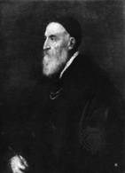
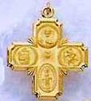
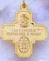
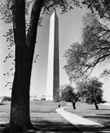
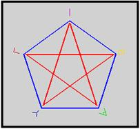
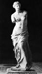
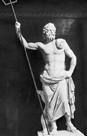
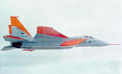

Grand Gallery

Chapter 6
Chip Sherwood
Titian
Famous Parquet Floor
PTS Team
Cruciform Tie Clip
Washington Monument
Vatican Secret Archives
Judicial Police
Drawn and quartered
Pentacle
Ku Klux Headpiece
Yin and Yang
Venus
Olympiads
Hollywood
Devil's Pitchfork
Fighter Jets
Generals
Black Light
Lieutenant Collet
AKG Headphones
Grand Gallery See Prologue.
Titian He was the greatest Italian Renaissance painter of the Venetian school. He was recognized early in his own lifetime as a supremely great painter, and his reputation has in the intervening centuries never suffered a decline. In 1590 the art theorist Giovanni Lomazzo declared him “the sun amidst small stars not only among the Italians but all the painters of the world.” The universality of Titian's genius is not questioned today, for he was surpassingly great in all aspects of the painter's art.
[ "Titian." Encyclopedia Britannica. 2004. Encyclopedia
Britannica Online.
20 Sept. 2004 <http://search.eb.com/eb/article?tocId=9108687>.]

Titian’s Self Portrait.
Famous Parquet Floor See Chapter 4.
PTS team The letters stand for Police Technique et Scientifique. French PTS teams are tactical response teams that specialize in assessing crime scenes and searching for important information regarding the crime. They are comparable to forensics teams in America, although the French teams are more highly trained in the combat areas. It would be typical for a PTS team to find gun powder residue as they are usually the first set of people called to a crime scene.
http://www.fas.org/irp/world/france/interieur/dcpj/ September 20, 2004
Cruciform Tie Clip Four Way medals are also known as a cruciform. It is actually four medals in one. The medal has the Sacred Heart at the top (a scapular medal, with Our Lady of Mt. Carmel on the back); St. Christopher on the right; Miraculous at the bottom; and St. Joseph on the left. The words "I am Catholic, please call a priest" are usually inscribed on the back to indicate to an emergency worker the wearer's desire for the last sacraments. Bezu Fache, a religious man, wears one of these as a tie clip.


http://www.beaumont.com/x5/Religious/95w.htm
Washington Monument The Washington Monument is an obelisk in Washington, D.C., honouring George Washington, the first president of the United States. It was constructed of granite faced with Maryland marble, the structure is 55 feet (16.8 metres) square at the base, 555 feet 5 inches (169.3 metres) high, and weighs an estimated 91,000 tons. At its completion in 1884 it was the world's tallest man-made structure, though it was supplanted by the Eiffel Tower just five years later. It remains the world's tallest masonry structure

[“Washington Monument.” Encyclopedia Britannica. 2004. Encyclopedia Britannica Online. 20 Sept. 2004 <http://search.eb.com/eb/article?tocId=9076193]
Vatican Secret Archives Some 264 popes have reigned over the course of almost 2,000 years and in that time they have written major parts of the history of the Western world. Their stories fill some 30 miles (50 kilometers) of shelves in the Vatican Secret Archives, home to many of the pivotal documents of Western history. Here you'll find the petition on behalf of Henry VIII seeking an annulment of his marriage to Catherine of Aragon.
http://news.nationalgeographic.com/news/2001/11/1118_vaticansecrets.html
Vittoria Vetra Vittoria is Robert Langdon’s lover from Dan Brown’s past novel, Angels and Demons. She is the daughter of a famous scientist and embarks on a crazy adventure with Robert Langdon throughout Vatican City and Rome.
Judicial Police The Direction Centrale Police Judiciaire (DCPJ) is a major French internal security service which acts as the "public face" of the DST. One of essential roles of the police is the search for infringements of the law, to observe them, to gather evidence, to identify the authors of crimes, and to apprehend them. Acting thus, the police becomes an ancillary to the judicial authority and takes therefore the JUDICIAL POLICE designation. http://www.fas.org/irp/world/france/interieur/dcpj/ September 20, 2004
drawn and quartered To be quartered is to have ropes tied to all four major limbs (both arms, both legs) and to be pulled apart until the limbs are separated from the body. This can be done by various means, but one popular means was to attach the ropes to horses and have the horses run in four different directions.
The Pentacle The Pythagorean mystics worshipped the pentacle or pentagram, a pentacle which is written or drawn, because it was based on the symbol of the Goddess Kore, frequently thought represented by the apple core. The mystics called this symbol Pentalpha, the birth-letter interlaced five times. The symbol meant "life" or "health." The five-point star has also been known as the star of Isis, or of Isis' underground twin Nephthys. To the Egyptians the star represented the underground womb.
http://www.themystica.org/mystica/articles/p/pentacle.html

Ku Klux Klan headpiece The Ku Klux Klan is an intensely racist white supremacist group. Founded in 1866, the organization quickly became a vehicle for Southern white underground resistance to Radical Reconstruction. Klan members sought the restoration of white supremacy through intimidation and violence aimed at the newly enfranchised black freedmen. The headpiece of the Klan resembles a pointed white sheet that covers the entire face, with special holes for the eyes and mouth.
"Ku Klux Klan." Encyclopedia Britannica. 2004.
Encyclopedia Britannica Online.
14 Sept. 2004 <http://search.eb.com/eb/article?tocId=9046315>.
Yin and Yang In Eastern thought Yin and Yang are the two complementary forces, or principles, that make up all aspects and phenomena of life. Yin is conceived of as earth, female, dark, passive, and absorbing; it is present in even numbers, in valleys and streams, and is represented by the tiger, the color orange, and a broken line. Yang is conceived of as heaven, male, light, active, and penetrating; it is present in odd numbers, in mountains, and is represented by the dragon, the color azure, and an unbroken line. The two are both said to proceed from the Supreme Ultimate (T'ai Chi), their interplay on one another (as one increases the other decreases) being a description of the actual process of the universe and all that is in it. In harmony, the two are depicted as the light and dark halves of a circle.
"yin-yang." Encyclopedia
Britannica. 2004. Encyclopedia Britannica Online.
9 Dec. 2004 <http://search.eb.com/eb/article?tocId=9077972>.
Venus Venus The Roman Goddess Of Love, also known as Aphrodite in Greek Mythology. Venus was born of the Sea and the Sky. She was honored as the Mother of the Roman people. Julius Caesar was said to have linked his lineage to Venus. Her mortal born son was Aeneas. Aeneas was the founder of the great city of Rome. There are still shrines to Venus existing in the Mediterranean Region to this day. Each year the city of Venice, named for Venus, celebrates the marriage of their city to Venus. Venus serves as inspiration to many great works of art, including the statue of Venus De Milo in the Louvre and the great painting The Birth of Venus, by Botticelli. It is the Goddess Venus who inspires people to love one another and to celebrate the rites of Marriage. She is also associated with the rites of Spring and Fertility. Though there are many other great Goddesses associated with Love, Venus reigns as the supreme Goddess Of Love.
http://www.geocities.com/Heartland/Lake/3483/venus.html

“Venus de Milo” (J.E. Bulloz)
Olympiads Of all the games held throughout Greece, the Olympic Games are the most famous. Held every four years between August 6 and September 19, they occupied such an important place in Greek life that time was measured by the interval between them—an Olympiad. Although the first Olympic champion listed in the records was one Coroebus of Elis, a cook, who won the sprint race in 776 BC, it is generally accepted that the Games were probably at least 500 years old at that time. According to one legend, they were founded by Heracles, son of Alcmene. The Olympic Games, like all Greek games, were an intrinsic part of a religious festival. They were held in honour of Zeus at Olympia in the city-state of Elis, on a track about 32 metres (35 yards) wide.
"Olympic Games." Encyclopedia Britannica. 2004.
Encyclopedia Britannica Online.
9 Dec. 2004 <http://search.eb.com/eb/article?tocId=59590>.
Olympic Flag
Hollywood Hollywood is a district within the city of Los Angeles, California, U.S., whose name is synonymous with the American motion-picture industry. Lying northwest of downtown Los Angeles, it is bounded by Hyperion Avenue and Riverside Drive (east), Beverly Boulevard (south), the foothills of Santa Monica Mountains (north), and Beverly Hills (west). Since the early 1900s, when movie-making pioneers found in southern California an ideal blend of mild climate, much sunshine, varied terrain, and a large labour market, the image of Hollywood as the fabricator of tinseled cinematic dreams has become worldwide.
"Hollywood." Encyclopedia Britannica. 2004. Encyclopedia
Britannica Online.
9 Dec. 2004 <http://search.eb.com/eb/article?tocId=9040811>.
Poseidon's Trident In Greek religion, Poseidon was the god of the sea and of water generally; he is to be distinguished from Pontus, the personification of the sea and the oldest Greek divinity of the waters. The name Poseidon means either “husband of earth” or “lord of the earth.” Traditionally he was a son of Cronus, an ancient chief god, and Rhea, a fertility goddess, and was brother of Zeus, the chief god, and Hades, god of the underworld. When the three brothers deposed their father, the kingdom of the sea fell by lot to Poseidon. His weapon was the trident, but it may originally have been a long-handled fish spear. "Poseidon." Encyclopedia Britannica. 2004. Encyclopedia Britannica Online. 9 Dec. 2004 <http://search.eb.com/eb/article?tocId=9061019>.

Poseidon with his trident.
The Devil's Pitchfork The devil is the spirit or power of evil. Though sometimes
used for minor demonic spirits, the word “devil” generally refers to the prince
of evil spirits and as such takes various forms in the religions of the world.
In
the monotheistic Western religions, the devil is viewed as a fallen angel
who in pride has tried to usurp the position of the one and only God. In Judaism, and later Christianity, the devil was
known as Satan. The devil is typically
depicted carrying a pitchfork that resembles perfectly the trident of Poseidon
above. It is a staff with three points and is colored red.
"devil." Encyclopedia Britannica. 2004.
Encyclopedia Britannica Online.
9 Dec. 2004 <http://search.eb.com/eb/article?tocId=9030155>.
Fighter Jets Aircraft have been a fundamental part of military power since the mid-20th century. Generally speaking, all military aircraft fall into one of the following categories: fighters, which secure control of essential airspaces by driving off or destroying enemy aircraft; bombers, which are larger, heavier, and less maneuverable craft designed to attack surface targets with bombs or missiles; ground-support, or attack, aircraft, which operate at lower altitudes than bombers and air-superiority fighters and attack tanks, troop formations, and other ground targets; transport and cargo planes, big-bodied craft with large amounts of interior space for carrying weapons, equipment, supplies, and troops over moderate or long distances; and helicopters, which are rotary-winged aircraft used for ground support, to transport assault troops, and for short-distance transport and surveillance. "military aircraft." Encyclopedia Britannica. 2004. Encyclopedia Britannica Online. 9 Dec. 2004 <http://search.eb.com/eb/article?tocId=9110184>.

F-15 Eagle, Tactical Jet Fighter.
Generals General is the title and rank of a senior
army officer, usually one who commands units larger than a regiment or its
equivalent or units consisting of more than one arm of the service. Frequently,
however, a general is a staff officer who does not command troops but who
plans their operations in the field. General, lieutenant
general, and major general are the first, second, and third grades of general
officers in many armies. "general." Encyclopedia
Britannica. 2004. Encyclopedia Britannica Online.
9 Dec. 2004 <http://search.eb.com/eb/article?tocId=9036357>.
Venereal- a. Of persons: Under the influence of Venus; inclined to be lascivious; addicted to venery or lust. b. Of or pertaining to, associated or connected with, sexual desire or intercourse Oxford English Dictionary Online © Oxford University Press 2004]
Stylo de lumiere noire/black light pen Often called black light, ultraviolet radiation is invisible to the human eye, but when it falls on certain surfaces [such as the black light pen utilized by Sauniere], it causes them to fluoresce, or emit visible light. That portion of the electromagnetic spectrum adjacent to the short wavelength, or violet, end of the visible light range, is called ultraviolet radiation. Ultraviolet radiation is emitted from some high-temperature surfaces, such as the sun."ultraviolet radiation." Britannica Student Encyclopedia. 2004. Encyclopædia Britannica Online. 9 Dec. 2004 <http://search.eb.com/ebi/article?tocId=9277493>.
Lieutenant Collet- See Chapter 1.
AKG headphones- For over twenty years, professional engineers and musicians have made the AKG K 240 headphones the best selling and most widely used headphones in large studios, sound stages and orchestras around the world. The sell themselves based upon their comfort and the quality of sound that they produce.
http://www.sweetwater.com/store/search.php?s=akg+headphones
AKG K 240 Studio
Le moment de verite French colloquial phrase, translated as “the moment of truth”